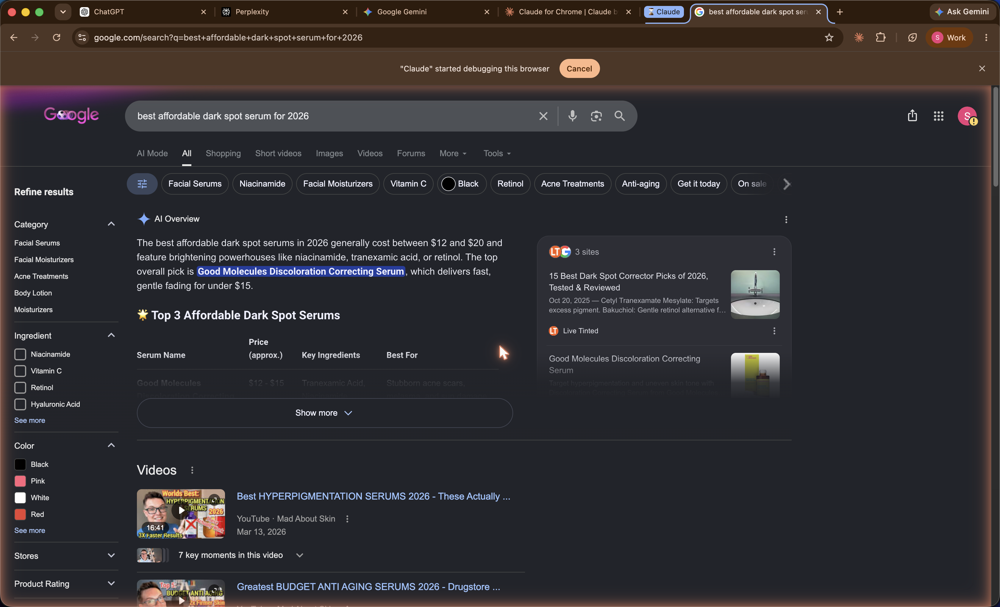
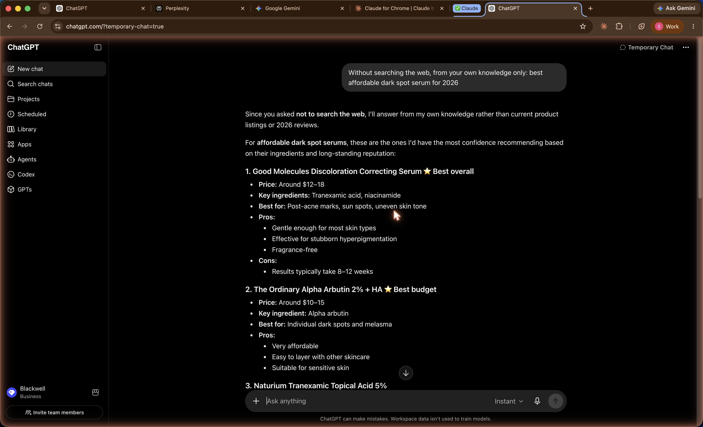
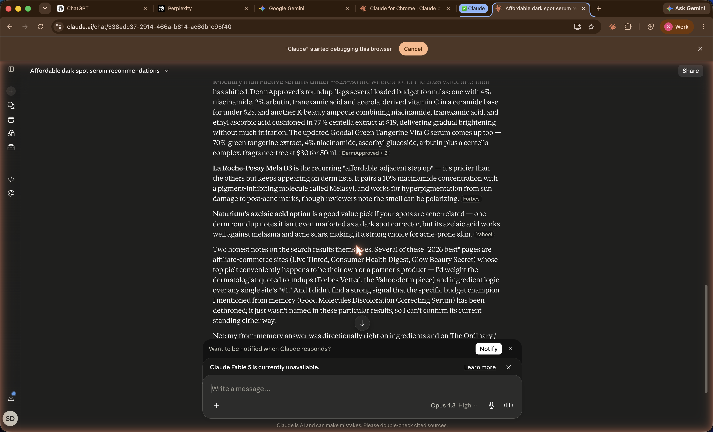
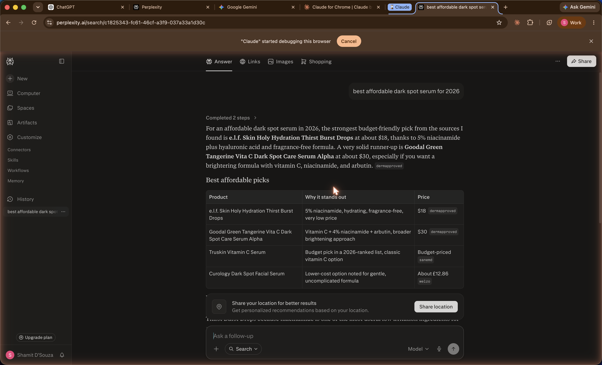
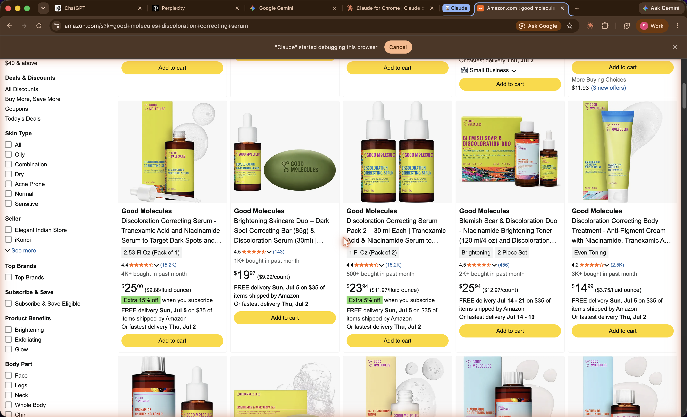

Blackwell Enterprises
A follow-up read on how AI engines and search see Good Molecules today, after the crawler and structured-data fixes went live. What moved, what held, and the off-site work still on the table.
We re-graded Good Molecules on the same five dimensions as the June 1 audit, scored 0 to 100 against observed behavior across the six AI answer engines, Amazon and other retailer listings, the brand's own indexed pages and schema, and the agent-commerce surface. Competitor scores are our estimates from the same public signals, checked the same day. Composite is the simple average.
The composite moved from D (61) to C (67) since June 1, and the two June 1 Critical findings are closed. The WAF now lets the major AI assistants crawl the site, and every product page serves full price and rating schema, so the "Claude could not read the price and fell back to Amazon" finding no longer reproduces. The payoff shows up in recommendability: Good Molecules is now named by four of the six engines in live retrieval, including the top pick on ChatGPT and Google. The remaining drag is off-site. Two engines still do not surface the brand, the reputation is strong but not linked to the entity, and the agentic-commerce endpoints answer a challenge instead of serving.
| Dimension | Good Molecules | The Ordinary | AXIS-Y | What it measures |
|---|---|---|---|---|
| Discoverability | 72 |
55 | 75 | Entity presence, agent discovery files, crawler access, third-party listings |
| Quotability | 80 |
40 | 75 | Schema depth, structured product and policy data, accuracy in machine-readable form |
| Recommendability | 66 |
85 | 55 | Inclusion in AI category answers and the listicles engines cite |
| Transactability | 55 |
35 | 70 | UCP and MCP endpoints, payment handlers, agent-readable pricing |
| Reputation | 60 |
80 | 55 | Review aggregator presence and rating, sentiment, links from the entity to that reputation |
| Composite | 67 (C) | 59 (F) | 66 (C) | Up from 61 (D) on June 1. The gains are on the machine-readable layer; the gap left is off-site recommendability and reputation linkage. |
Grading scale: A 90+, B 75 to 89, C 60 to 74, D 50 to 59, F below 50. Competitor scores are estimates from observed public signals checked June 30, 2026, not full audits of those brands. The Ordinary scores low on the machine-readable layer yet high on recommendability, because sheer category authority carries it into answers that its own site does little to earn. Method and queries in the methodology section.
At the June 1 audit, Good Molecules had one working AI channel and four blocked ones. The dividing line was crawler access, not model quality: search-fed surfaces (Gemini, Google AI Mode, AI Overview, Bing) let Googlebot and Bingbot through and named the brand, while the standalone assistants (ChatGPT, Claude, Perplexity, Copilot) were stopped at the WAF and answered from Amazon, Ulta, and Reddit instead. The brand then shipped two fixes: it opened the WAF for the major assistants and added full product schema, and it published a rich llms.txt. This re-audit is the live measurement of what those fixes bought.
Five findings: two wins that closed the June 1 Criticals, three gaps that are the next work.
Product, Offer (price $12, USD, in stock), and AggregateRating (4.3 across 7,631 reviews) in machine-readable form. The June 1 centerpiece finding, Claude admitting it could not read the price and falling back to Amazon, no longer reproduces.sameAs connecting the site's entity to any of it, and the formal aggregators are thin (Trustpilot 2.8 on four unclaimed reviews, no BBB or ConsumerAffairs profile).agents.md file now serves, but the UCP and MCP endpoints and llms-full.txt return a WAF challenge rather than a confirmed live response, so an agent that tries to read or transact is met with a wall.Finding 1 of 5 · Win, closes June 1 Critical
AI answer engines are where many skincare shoppers now start. They do not browse; they ask "what is the best affordable dark spot serum" and return a short, synthesized list. We ran the full six-engine battery, each in two passes where a browsing toggle exists: from the model's own memory with search off, then with live web retrieval on. The frozen query was the brand's core category, "best affordable dark spot serum for 2026." Good Molecules was named in six of nine passes.
| Engine | From memory (search off) | Live web retrieval (search on) |
|---|---|---|
| ChatGPT (Temporary Chat) | named, #1 | named, #1 |
| Claude (fresh chat) | named, first | not named |
| Gemini | not named | named, #2 |
| Perplexity | retrieval only | not named |
| Google AI Overview | retrieval only | top pick |
| Copilot (guest) | retrieval only | named, #2 |
At the June 1 audit, none of the standalone assistants named the brand in a category answer. Today ChatGPT ranks it first from memory and in live retrieval, Google's AI Overview calls it the top overall pick, and Gemini and Copilot place it in the top three. The from-memory reads are the striking part: the serum now sits in the model's priors, not just its search results.
Google AI Overview, live retrieval: "best affordable dark spot serum for 2026"
"The top overall pick is Good Molecules Discoloration Correcting Serum, which delivers fast, gentle fading for under $15."

Google AI Overview for the category. Good Molecules is the named top pick, with the brand's own product card and cited roundups. Captured June 30, 2026. Google AI Overview is non-deterministic, so treat this as one representative render.
ChatGPT, Temporary Chat, from memory: same query
"1. Good Molecules Discoloration Correcting Serum. Best overall. Tranexamic acid, niacinamide. Best for post-acne marks, sun spots, uneven skin tone."

ChatGPT Temporary Chat, browsing off. The brand is the number-one pick from the model's own knowledge. Captured June 30, 2026.
What earned it. Opening the WAF for GPTBot, ClaudeBot, and PerplexityBot, and serving product schema, put readable content where these engines look. Recommendability is downstream of exactly the on-site work already done. The remaining passes are addressed in finding 3.
Finding 2 of 5 · Win, closes June 1 Critical
Quotability was the finding behind the June 1 centerpiece: asked for the price of the hero serum, Claude said it could not read it from the site and fell back to Amazon and other retailers. That was because product pages exposed no structured data. They do now. We confirmed it in the headed browser, reading the raw page after the storefront's challenge resolves.
// goodmolecules.com hero PDP, JSON-LD read in-browser, June 30, 2026 "@type": "Product", name: "Good Molecules Discoloration Correcting Serum 30 ml", brand: "Good Molecules", offers: { price: 12, priceCurrency: "USD", availability: "InStock" }, aggregateRating: { ratingValue: 4.3, reviewCount: 7631 }
Why it matters
When a shopper asks an engine "how much is the Good Molecules discoloration serum" or "compare it to The Ordinary," the engine can now quote the price, the in-stock status, and the 4.3-star rating directly from the brand's own page instead of guessing from a third-party listing. The canonical page resolves to a size-specific URL (the 30 ml at $12), which also removes the size and price confusion the June 1 audit flagged. On this dimension Good Molecules now sits ahead of The Ordinary, whose product pages expose no confirmed schema at all.
Status. Closed. This finding is included as verification that the June 1 remediation holds live, not as open work. Keep the schema on the PDP template as the catalog changes, and extend AggregateRating anywhere it is still missing.
Finding 3 of 5 · High severity, open
The recommendability win is real but not universal. In live retrieval, Claude and Perplexity did not name Good Molecules. The reason is instructive: both answered from affiliate and dermatologist roundups whose own lists do not include the brand. This is the off-site gap, and it is the single clearest lever left.
Claude, live web retrieval: "best affordable dark spot serum for 2026"
"I didn't find a strong signal that the specific budget champion I mentioned from memory (Good Molecules Discoloration Correcting Serum) has been dethroned; it just wasn't named in these particular results."

Claude in live retrieval names La Roche-Posay, Naturium, and Goodal from Forbes and Yahoo roundups, and states plainly that Good Molecules was not in the results it retrieved. Captured June 30, 2026.

Perplexity's ranked answer leads with e.l.f., Goodal, Truskin, and Curology, sourced from dermapproved, sanemd, and welzo. Good Molecules is absent. Captured June 30, 2026.
Why the two holdouts differ from the four wins
The engines that name the brand either read the site directly (ChatGPT, Gemini) or lean on Google's index (AI Overview). The two that miss it lean hardest on a specific set of third-party "best of 2026" lists, and Good Molecules is not on those lists. The brand it most often loses to in these answers, The Ordinary, does not win on schema; its product pages are thinner than Good Molecules'. It wins on being in every roundup. That is an off-site position, earned through mentions, not markup.
The fix. Get Good Molecules into the specific category sources these engines cite, and seed authentic third-party mentions across YouTube, Reddit, and short-form video. Off-site mentions are the strongest correlate of AI visibility and the part of recommendability that on-site schema cannot move. This is Phase 2 work, described at the end of the deck.
Finding 4 of 5 · High severity, open
Reputation is bimodal. Where real customers gather, it is strong. Where machines look for a structured rating, it is thin or disconnected. The sentiment is not the problem; the linkage is.

The hero serum on Amazon: 4.4 stars, roughly 15,200 ratings, an "Overall Pick" badge. This is the retailer engines fall back to for a Beautylish-exclusive direct-to-consumer brand. Captured June 30, 2026.
The disconnect
The homepage entity declares OnlineStore, WebSite, and ContactPoint types but no sameAs array pointing at any of this reputation. So the excellent 4.4-star product on Amazon and the anonymous rating on the brand's own entity are, to a machine, two unlinked records. The formal aggregators do not help: Trustpilot shows 2.8 across four reviews on an unclaimed profile, and neither BBB nor ConsumerAffairs has a profile at all. The strong reputation lives on Amazon and in UGC, exactly where it is hardest for an entity to claim it.
The fix. Add sameAs links from the entity to the retailer and social profiles, claim and populate the aggregator profiles where it helps, and, through Phase 2, grow the off-site review base that Claude and Perplexity read. Connecting the reputation to the entity is what lets every engine attribute the 4.4 stars the brand already has.
Finding 5 of 5 · Medium severity, open
This dimension improved since June 1, when the agent endpoints all returned 404, but it is not finished. The agents.md file now serves a real 200 response. The rest of the agentic surface answers a WAF challenge instead of a confirmed response.
// goodmolecules.com agent surface, June 30, 2026 /agents.md 200 served /llms-full.txt 202 challenge, not a confirmed handler /.well-known/ucp 202 challenge /api/ucp/mcp 202 challenge /sitemap_agentic_discovery.xml 202 challenge agent-readable pricing present (Offer schema on the PDP)
Why it matters
A 202 is the storefront's interstitial for a non-JavaScript client. An AI shopping agent reading these endpoints gets the challenge, not the content, so the UCP and MCP rails cannot be relied on to serve or transact even though they appear provisioned. Agent-readable pricing is the bright spot: because the Offer schema is on the product page, an agent can already read the price. The gap is the discovery and transaction endpoints around it. For comparison, AXIS-Y serves agents.md, /.well-known/ucp, and its agentic sitemap with clean 200s.
The fix. Allowlist the agentic endpoints and llms-full.txt so verified agents receive a 200 rather than a challenge, and confirm each returns real content. This is a WAF and routing change, mechanical, and it completes the layer the June 1 remediation started.
The same machine-readable signals across three brands, checked the same day. Good Molecules now leads on the on-site layer it controls. The contrast is with the two ends of the market: The Ordinary, which wins recommendability on authority despite a bare site, and AXIS-Y, which has built out the full agentic layer.
| Signal | Good Molecules | The Ordinary | AXIS-Y |
|---|---|---|---|
| Homepage title | descriptive | none server-rendered | none server-rendered |
| Homepage entity schema | OnlineStore · WebSite · SearchAction · ContactPoint | none | Organization · WebSite · SearchAction |
| Product structured data | Product + Offer + AggregateRating | none confirmed | Product + Offer |
| Assistant crawler access | GPTBot, ClaudeBot, PerplexityBot 200 | 200 | 200 |
| Agent endpoints (ucp, agents.md) | agents.md 200; ucp 202 | 404 | 200 |
| Named in AI category answers | four of six engines | nearly all | occasionally |
The Ordinary is the sharpest lesson. Its site is the weakest of the three on every machine-readable signal, yet it is named in almost every engine answer, because years of reviews, roundups, and mentions have made it the default. Good Molecules has now built the on-site foundation The Ordinary lacks. The remaining gap between them is the off-site authority that schema cannot buy, which is precisely the Phase 2 lever.
The June 1 audit's two Critical findings are closed, verified live in this re-audit. The remaining three findings are off-site and endpoint work, and they cluster into one phase of ongoing AI visibility work rather than a one-time fix.
Phase 2 · ongoing AI visibility
Three workstreams, each closing an open finding above.
sameAs links from the entity to the Amazon and social profiles, claim the aggregator listings, and connect the 4.4-star reputation to the machine-readable identity (finding 4)/.well-known/ucp, /api/ucp/mcp, llms-full.txt) so verified agents receive real content, completing the agent-commerce layer (finding 5)sameAs linkage live and validated; agentic endpoints returning 200 to verified agents. Measured against this re-audit as the frozen before state.The off-site lever, in detail
The clearest finding in this re-audit is that on-site work has done what it can. Good Molecules is now readable and, on four engines, recommended. The two holdout engines and the reputation gap are both off-site: they are decided by where the brand is mentioned, not by what its own pages say. For Phase 2 design partners we are standing up a vetted panel of independent reviewers and UGC creators, scored for neutrality, that can seed genuine third-party reviews across YouTube, Reddit, and short-form video, the exact surfaces where Good Molecules already has organic traction. Mentions of that kind are the single strongest correlate of AI visibility, well ahead of backlinks, and they are the part of reputation that on-site schema cannot reach. This is a capability we are building for Phase 2, not a finished network, and it is the lever that turns a readable brand into a recommended one across all six engines.
Every finding came from running specific tools and queries against public surfaces, in the same nine-phase program as the June 1 audit, so the two are directly comparable. It is all externally reproducible.
Truth table, frozen first
Before querying any engine, we pulled the brand's own machine surface directly: homepage and product <head> and JSON-LD, robots.txt, the AI bot user-agent crawlability matrix (GPTBot, OAI-SearchBot, ClaudeBot, PerplexityBot, Google-Extended, Amazonbot, Bingbot), and the agentic-layer probe over /agents.md, /.well-known/ucp, /api/ucp/mcp, and the agentic sitemap. The product schema in finding 2 was confirmed in the headed browser after the storefront's challenge resolves, since the site serves a 202 to a plain client. Pulled June 30, 2026.
AI behavior and recommendability
We ran the full six-engine battery (ChatGPT, Perplexity, Gemini, Claude, Google AI Overview, Microsoft Copilot) in headed browser sessions, two passes each where a browsing toggle exists: from the model's memory with search off, then with live retrieval on. Logged-in engines ran in a clean session where one is available (ChatGPT Temporary Chat, fresh Claude chat); Copilot ran as a guest. Gemini has no clean private mode, so its logged-in read is disclosed as contaminated and used conservatively. Each engine and pass was captured to a screenshot, logged per row in the battery log. The same query ran on every engine: "best affordable dark spot serum for 2026." Absence is robust to a logged-in profile; a "named" read on a clean or web-grounded surface is the one we rely on.
Reputation corpus
We pulled the brand's third-party reputation from Trustpilot, BBB, ConsumerAffairs, Reddit, YouTube, and its main retailer (Amazon), captured each, and checked whether any of it is linked to the site's entity through sameAs. The 4.4-star Amazon rating and the active Reddit and YouTube presence are real; the missing entity link is finding 4.
Competitive set
The Ordinary and AXIS-Y were checked the same day on the same signals (title, entity schema, product schema, crawler access, agent endpoints, AI category presence). Their dimension scores are estimates from those public signals, not full audits, and are labeled as such on the scorecard.
robots.txt, llms.txt, and product pages. Reputation and recommendability findings are reproducible by running the same public queries and the six-engine battery. All signals pulled June 30, 2026, against the June 1, 2026 audit baseline of composite D (61).